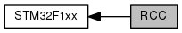

|
My Project
|
libopencm3 STM32F1xx Reset and Clock Control 更多...
|  |
函数 | |
| void | rcc_osc_ready_int_clear (enum rcc_osc osc) |
| RCC Clear the Oscillator Ready Interrupt Flag. 更多... | |
| void | rcc_osc_ready_int_enable (enum rcc_osc osc) |
| RCC Enable the Oscillator Ready Interrupt. 更多... | |
| void | rcc_osc_ready_int_disable (enum rcc_osc osc) |
| RCC Disable the Oscillator Ready Interrupt. 更多... | |
| int | rcc_osc_ready_int_flag (enum rcc_osc osc) |
| RCC Read the Oscillator Ready Interrupt Flag. 更多... | |
| void | rcc_css_int_clear (void) |
| RCC Clear the Clock Security System Interrupt Flag. 更多... | |
| int | rcc_css_int_flag (void) |
| RCC Read the Clock Security System Interrupt Flag. 更多... | |
| void | rcc_wait_for_osc_ready (enum rcc_osc osc) |
| RCC Wait for Oscillator Ready. 更多... | |
| void | rcc_osc_on (enum rcc_osc osc) |
| RCC Turn on an Oscillator. 更多... | |
| void | rcc_osc_off (enum rcc_osc osc) |
| RCC Turn off an Oscillator. 更多... | |
| void | rcc_css_enable (void) |
| RCC Enable the Clock Security System. 更多... | |
| void | rcc_css_disable (void) |
| RCC Disable the Clock Security System. 更多... | |
| void | rcc_osc_bypass_enable (enum rcc_osc osc) |
| RCC Enable Bypass. 更多... | |
| void | rcc_osc_bypass_disable (enum rcc_osc osc) |
| RCC Disable Bypass. 更多... | |
| void | rcc_set_sysclk_source (uint32_t clk) |
| RCC Set the Source for the System Clock. 更多... | |
| void | rcc_set_pll_multiplication_factor (uint32_t mul) |
| RCC Set the PLL Multiplication Factor. 更多... | |
| void | rcc_set_pll2_multiplication_factor (uint32_t mul) |
| RCC Set the PLL2 Multiplication Factor. 更多... | |
| void | rcc_set_pll3_multiplication_factor (uint32_t mul) |
| RCC Set the PLL3 Multiplication Factor. 更多... | |
| void | rcc_set_pll_source (uint32_t pllsrc) |
| RCC Set the PLL Clock Source. 更多... | |
| void | rcc_set_pllxtpre (uint32_t pllxtpre) |
| RCC Set the HSE Frequency Divider used as PLL Clock Source. 更多... | |
| void | rcc_set_adcpre (uint32_t adcpre) |
| ADC Setup the A/D Clock. 更多... | |
| void | rcc_set_ppre2 (uint32_t ppre2) |
| RCC Set the APB2 Prescale Factor. 更多... | |
| void | rcc_set_ppre1 (uint32_t ppre1) |
| RCC Set the APB1 Prescale Factor. 更多... | |
| void | rcc_set_hpre (uint32_t hpre) |
| RCC Set the AHB Prescale Factor. 更多... | |
| void | rcc_set_usbpre (uint32_t usbpre) |
| RCC Set the USB Prescale Factor. 更多... | |
| void | rcc_set_prediv1 (uint32_t prediv) |
| void | rcc_set_prediv2 (uint32_t prediv) |
| void | rcc_set_prediv1_source (uint32_t rccsrc) |
| void | rcc_set_mco (uint32_t mcosrc) |
| uint32_t | rcc_system_clock_source (void) |
| RCC Get the System Clock Source. 更多... | |
| void | rcc_clock_setup_in_hsi_out_64mhz (void) |
| RCC Set System Clock PLL at 64MHz from HSI. 更多... | |
| void | rcc_clock_setup_in_hsi_out_48mhz (void) |
| RCC Set System Clock PLL at 48MHz from HSI. 更多... | |
| void | rcc_clock_setup_in_hsi_out_24mhz (void) |
| RCC Set System Clock PLL at 24MHz from HSI. 更多... | |
| void | rcc_clock_setup_in_hse_8mhz_out_24mhz (void) |
| RCC Set System Clock PLL at 24MHz from HSE at 8MHz. 更多... | |
| void | rcc_clock_setup_in_hse_8mhz_out_72mhz (void) |
| RCC Set System Clock PLL at 72MHz from HSE at 8MHz. 更多... | |
| void | rcc_clock_setup_in_hse_12mhz_out_72mhz (void) |
| RCC Set System Clock PLL at 24MHz from HSE at 12MHz. 更多... | |
| void | rcc_clock_setup_in_hse_16mhz_out_72mhz (void) |
| RCC Set System Clock PLL at 24MHz from HSE at 16MHz. 更多... | |
| void | rcc_clock_setup_in_hse_25mhz_out_72mhz (void) |
| RCC Set System Clock PLL at 72MHz from HSE at 25MHz. 更多... | |
| void | rcc_backupdomain_reset (void) |
| RCC Reset the backup domain. 更多... | |
变量 | |
| uint32_t | rcc_ppre1_frequency = 8000000 |
| uint32_t | rcc_ppre2_frequency = 8000000 |
libopencm3 STM32F1xx Reset and Clock Control
This library supports the Reset and Clock Control System in the STM32F1xx series of ARM Cortex Microcontrollers by ST Microelectronics.
Clock settings and resets for many peripherals are given here rather than in the corresponding peripheral library.
The library also provides a number of common configurations for the processor system clock. Not all possible configurations are included.
LGPL License Terms libopencm3 License
| void rcc_backupdomain_reset | ( | void | ) |
RCC Reset the backup domain.
The backup domain register is reset to disable all controls.
| void rcc_clock_setup_in_hse_12mhz_out_72mhz | ( | void | ) |
RCC Set System Clock PLL at 24MHz from HSE at 12MHz.
| void rcc_clock_setup_in_hse_16mhz_out_72mhz | ( | void | ) |
RCC Set System Clock PLL at 24MHz from HSE at 16MHz.
| void rcc_clock_setup_in_hse_25mhz_out_72mhz | ( | void | ) |
RCC Set System Clock PLL at 72MHz from HSE at 25MHz.
| void rcc_clock_setup_in_hse_8mhz_out_24mhz | ( | void | ) |
RCC Set System Clock PLL at 24MHz from HSE at 8MHz.
| void rcc_clock_setup_in_hse_8mhz_out_72mhz | ( | void | ) |
RCC Set System Clock PLL at 72MHz from HSE at 8MHz.
| void rcc_clock_setup_in_hsi_out_24mhz | ( | void | ) |
RCC Set System Clock PLL at 24MHz from HSI.
| void rcc_clock_setup_in_hsi_out_48mhz | ( | void | ) |
RCC Set System Clock PLL at 48MHz from HSI.
| void rcc_clock_setup_in_hsi_out_64mhz | ( | void | ) |
RCC Set System Clock PLL at 64MHz from HSI.
| void rcc_css_disable | ( | void | ) |
RCC Disable the Clock Security System.
| void rcc_css_enable | ( | void | ) |
RCC Enable the Clock Security System.
| void rcc_css_int_clear | ( | void | ) |
RCC Clear the Clock Security System Interrupt Flag.
| int rcc_css_int_flag | ( | void | ) |
RCC Read the Clock Security System Interrupt Flag.
| void rcc_osc_bypass_disable | ( | enum rcc_osc osc | ) |
RCC Disable Bypass.
Re-enable the internal clock (high speed and low speed clocks only). The internal clock must be disabled (see rcc_osc_off) for this to have effect.
| [in] | osc | enum ::osc_t. Oscillator ID. Only HSE and LSE have effect. |
| void rcc_osc_bypass_enable | ( | enum rcc_osc osc | ) |
RCC Enable Bypass.
Enable an external clock to bypass the internal clock (high speed and low speed clocks only). The external clock must be enabled (see rcc_osc_on) and the internal clock must be disabled (see rcc_osc_off) for this to have effect.
| [in] | osc | enum ::osc_t. Oscillator ID. Only HSE and LSE have effect. |
| void rcc_osc_off | ( | enum rcc_osc osc | ) |
RCC Turn off an Oscillator.
Disable an oscillator and power off.
| [in] | osc | enum ::osc_t. Oscillator ID |
| void rcc_osc_on | ( | enum rcc_osc osc | ) |
RCC Turn on an Oscillator.
Enable an oscillator and power on. Each oscillator requires an amount of time to settle to a usable state. Refer to datasheets for time delay information. A status flag is available to indicate when the oscillator becomes ready (see rcc_osc_ready_int_flag and rcc_wait_for_osc_ready).
| [in] | osc | enum ::osc_t. Oscillator ID |
| void rcc_osc_ready_int_clear | ( | enum rcc_osc osc | ) |
RCC Clear the Oscillator Ready Interrupt Flag.
Clear the interrupt flag that was set when a clock oscillator became ready to use.
| [in] | osc | enum ::osc_t. Oscillator ID |
| void rcc_osc_ready_int_disable | ( | enum rcc_osc osc | ) |
RCC Disable the Oscillator Ready Interrupt.
| [in] | osc | enum ::osc_t. Oscillator ID |
| void rcc_osc_ready_int_enable | ( | enum rcc_osc osc | ) |
RCC Enable the Oscillator Ready Interrupt.
| [in] | osc | enum ::osc_t. Oscillator ID |
| int rcc_osc_ready_int_flag | ( | enum rcc_osc osc | ) |
RCC Read the Oscillator Ready Interrupt Flag.
| [in] | osc | enum ::osc_t. Oscillator ID |
| void rcc_set_adcpre | ( | uint32_t | adcpre | ) |
ADC Setup the A/D Clock.
The ADC's have a common clock prescale setting.
| [in] | adcpre | uint32_t. Prescale divider taken from RCC ADC clock prescaler enable values |
| void rcc_set_hpre | ( | uint32_t | hpre | ) |
RCC Set the AHB Prescale Factor.
| [in] | hpre | Unsigned int32. AHB prescale factor RCC_CFGR AHB prescale Factors |
| void rcc_set_pll2_multiplication_factor | ( | uint32_t | mul | ) |
RCC Set the PLL2 Multiplication Factor.
| [in] | mul | Unsigned int32. PLL multiplication factor RCC_CFGR PLL Multiplication Factor |
| void rcc_set_pll3_multiplication_factor | ( | uint32_t | mul | ) |
RCC Set the PLL3 Multiplication Factor.
| [in] | mul | Unsigned int32. PLL multiplication factor RCC_CFGR PLL Multiplication Factor |
| void rcc_set_pll_multiplication_factor | ( | uint32_t | mul | ) |
RCC Set the PLL Multiplication Factor.
| [in] | mul | Unsigned int32. PLL multiplication factor RCC_CFGR PLL Multiplication Factor |
| void rcc_set_pll_source | ( | uint32_t | pllsrc | ) |
RCC Set the PLL Clock Source.
| [in] | pllsrc | Unsigned int32. PLL clock source RCC_CFGR PLL Clock Source |
| void rcc_set_pllxtpre | ( | uint32_t | pllxtpre | ) |
RCC Set the HSE Frequency Divider used as PLL Clock Source.
| [in] | pllxtpre | Unsigned int32. HSE division factor RCC_CFGR HSE Divider for PLL |
| void rcc_set_ppre1 | ( | uint32_t | ppre1 | ) |
RCC Set the APB1 Prescale Factor.
| [in] | ppre1 | Unsigned int32. APB1 prescale factor RCC_CFGR APB1 prescale Factors |
| void rcc_set_ppre2 | ( | uint32_t | ppre2 | ) |
RCC Set the APB2 Prescale Factor.
| [in] | ppre2 | Unsigned int32. APB2 prescale factor RCC_CFGR APB2 prescale Factors |
| void rcc_set_sysclk_source | ( | uint32_t | clk | ) |
RCC Set the Source for the System Clock.
| [in] | clk | Unsigned int32. System Clock Selection RCC_CFGR System Clock Selection |
| void rcc_set_usbpre | ( | uint32_t | usbpre | ) |
RCC Set the USB Prescale Factor.
The prescale factor can be set to 1 (no prescale) for use when the PLL clock is 48MHz, or 1.5 to generate the 48MHz USB clock from a 64MHz PLL clock.
| [in] | usbpre | Unsigned int32. USB prescale factor RCC_CFGR USB prescale Factors |
| uint32_t rcc_system_clock_source | ( | void | ) |
RCC Get the System Clock Source.
| void rcc_wait_for_osc_ready | ( | enum rcc_osc osc | ) |
RCC Wait for Oscillator Ready.
| [in] | osc | enum ::osc_t. Oscillator ID |
| uint32_t rcc_ppre1_frequency = 8000000 |
Default ppre1 peripheral clock frequency after reset.
| uint32_t rcc_ppre2_frequency = 8000000 |
Default ppre2 peripheral clock frequency after reset.
 1.8.11
1.8.11